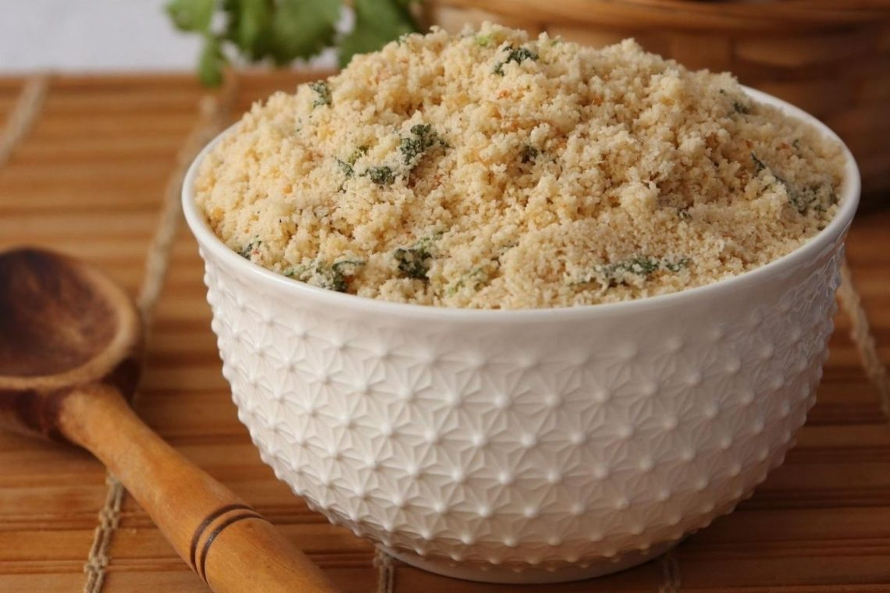

Farofa

Description
Farofa (from the quimbundo falofa) is scalded or roasted cassava
flour or cornmeal, usually rubbed in fat or butter, to which
countless other ingredients can be added, such as: roasted bacon,
fried sausage, egg, meat, tofu, or other foods of vegetable origin.
Ingredients
- 1 sliced onion
- 3 mashed garlic cloves
- 1 ½ cup of mandioca flour
Steps
-
Put the onion in the frying pan with oil and let it cook for 2
minutes. Add the garlic and mix well.
-
Add the flour and the preferred seasonings (like salt and
pepper) and fry for about 4 minutes, always stirring.
back